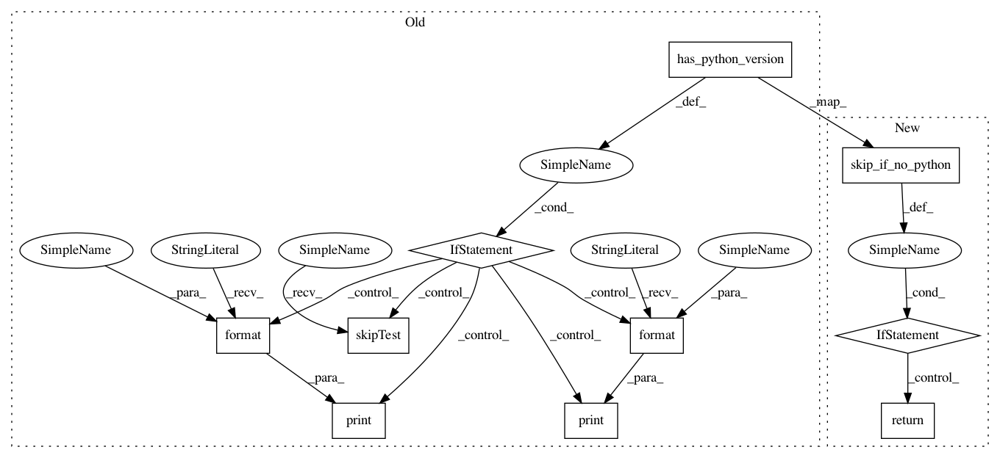

f5f79ba4e667bfd37bd0b40547e944a687e5b948,tests/python/pants_test/backend/python/tasks2/test_python_run_integration.py,PythonRunIntegrationTest,test_pants_binary_interpreter_selection_with_pexrc,#PythonRunIntegrationTest#,93
Before Change
def test_pants_binary_interpreter_selection_with_pexrc(self):
py27 = "2.7"
py3 = "3"
if self.has_python_version(py27) and self.has_python_version(py3):
print("Found both python {} and python {}. Running test.".format(py27, py3))
py27_path, py3_path = self.python_interpreter_path(py27), self.python_interpreter_path(py3)
with setup_pexrc_with_pex_python_path(os.path.join(os.path.dirname(sys.argv[0]), ".pexrc") , [py27_path, py3_path]):
with temporary_dir() as interpreters_cache:
pants_ini_config = {"python-setup": {"interpreter_cache_dir": interpreters_cache}}
pants_run_27 = self.run_pants(
command=["binary", "{}:main_py2".format(os.path.join(self.testproject, "python_3_selection_testing"))],
config=pants_ini_config
)
self.assert_success(pants_run_27)
pants_run_3 = self.run_pants(
command=["binary", "{}:main_py3".format(os.path.join(self.testproject, "python_3_selection_testing"))],
config=pants_ini_config
)
self.assert_success(pants_run_3)
else:
print("Could not find both python {} and python {} on system. Skipping.".format(py27, py3))
self.skipTest("Missing neccesary Python interpreters on system.")
// Ensure proper interpreter constraints were passed to built pexes.
py2_pex = os.path.join(os.getcwd(), "dist", "main_py2.pex")
py3_pex = os.path.join(os.getcwd(), "dist", "main_py3.pex")
py2_info = get_pex_info(py2_pex)
py3_info = get_pex_info(py3_pex)
After Change
def test_pants_binary_interpreter_selection_with_pexrc(self):
py27 = "2.7"
py3 = "3"
if self.skip_if_no_python(py27) or self.skip_if_no_python(py3):
return
py27_path, py3_path = self.python_interpreter_path(py27), self.python_interpreter_path(py3)
with setup_pexrc_with_pex_python_path(os.path.join(os.path.dirname(sys.argv[0]), ".pexrc") , [py27_path, py3_path]):
with temporary_dir() as interpreters_cache:
pants_ini_config = {"python-setup": {"interpreter_cache_dir": interpreters_cache}}
In pattern: SUPERPATTERN
Frequency: 3
Non-data size: 10
Instances
Project Name: pantsbuild/pants
Commit Name: f5f79ba4e667bfd37bd0b40547e944a687e5b948
Time: 2017-12-27
Author: stuhood@twitter.com
File Name: tests/python/pants_test/backend/python/tasks2/test_python_run_integration.py
Class Name: PythonRunIntegrationTest
Method Name: test_pants_binary_interpreter_selection_with_pexrc
Project Name: pantsbuild/pants
Commit Name: f5f79ba4e667bfd37bd0b40547e944a687e5b948
Time: 2017-12-27
Author: stuhood@twitter.com
File Name: tests/python/pants_test/backend/python/tasks2/test_python_run_integration.py
Class Name: PythonRunIntegrationTest
Method Name: test_pants_run_interpreter_selection_with_pexrc
Project Name: pantsbuild/pants
Commit Name: f5f79ba4e667bfd37bd0b40547e944a687e5b948
Time: 2017-12-27
Author: stuhood@twitter.com
File Name: tests/python/pants_test/backend/python/tasks2/test_python_run_integration.py
Class Name: PythonRunIntegrationTest
Method Name: _maybe_run_version
Project Name: pantsbuild/pants
Commit Name: f5f79ba4e667bfd37bd0b40547e944a687e5b948
Time: 2017-12-27
Author: stuhood@twitter.com
File Name: tests/python/pants_test/backend/python/tasks2/test_python_run_integration.py
Class Name: PythonRunIntegrationTest
Method Name: test_pants_binary_interpreter_selection_with_pexrc